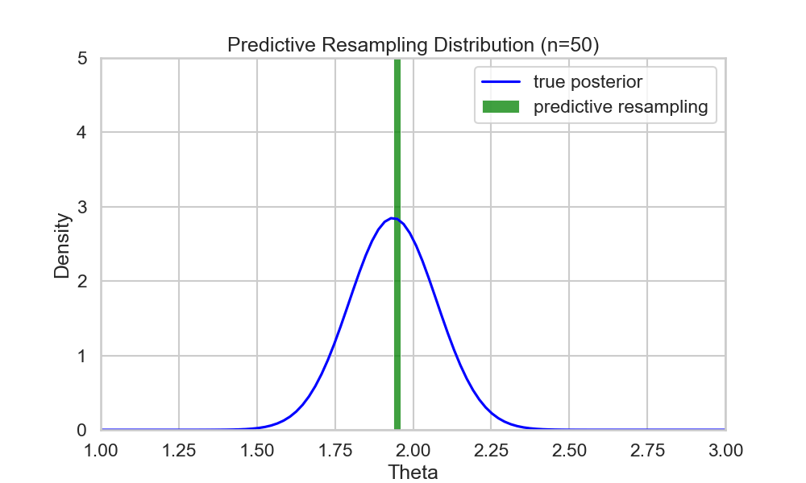

Martingale posteriors in modern AI
Trial Lecture, University of Oslo
Simen Eide
2025-11-28
Agenda
- Traditional Bayesian approach
- Predictive Bayesian Motivation
- Predictive resampling algorithm
- Theory
- Applications
- Conclusion
Traditional Bayes | Predictive Bayesian | Predictive Resampling | Theory | Applications | Conclusion
Traditional Bayesian approach
Traditional Bayesian approach
- We have collected \(y_{1:n}\) data points from an unknown distribution \(F_0\).
- We want to learn something about \(F_0\).
If we want to compute the posterior predictive with traditional Bayesian methods, we would define a prior \(\pi(\theta)\) and a sampling density \(f_{\theta}(y)\) and a likelihood (i.i.d) \(p_{\theta}(y_{1:n}) = \prod_{i=1}^n f_\theta(y_i)\). We can then collect some data \(y_{1:n}\) and define the posterior
\[ P(\theta | y_{1:n}) = \frac {\pi(\theta) p(y_{1:n} | \theta )} {\int \pi(\theta) p(y_{1:n} | \theta ) d\theta} \tag{1}\]
Posterior predictive
We can compute the distribution of a new data point \(y\) given the observed data \(y_{1:n}\) by using the posterior predictive
\[ P(y | y_{1:n}) = \int f_{\theta}(y) \pi(\theta | y_{1:n}) d\theta \tag{2}\]
Traditional Bayes | Predictive Bayesian | Predictive Resampling | Theory | Applications | Conclusion
What is a prior in a Bayesian Neural net really?
- Neural nets are black box models that are hard to interpret
- How can we have any intuition or prior knowledge about the parameters in hidden layers?
Standard answer:
- “We dont care, we just want to use it for variability”
- Mis-specified prior can “put probability mass in the wrong places”
Maybe we should define our models in a different way?
- Specify a predictive distribution \(p(y_{n+1} | y_{1:n})\) instead of a prior \(\pi(\theta)\) and a likelihood \(f_{\theta}(y)\)
- We can still get posteriors, but they are not the same as in traditional Bayesian inference
Motivational example with LLM?
Predictive Bayesian Motivation
Compute statistics from an infinite population
- Instead of defining prior+likelihood, we can think of bayesian ucertainty to originate from missing data.
- Predictive inference takes a different approach:
The assumption behind most, if not all, statistical problems is that there is an amount of data, \(x_{comp}\), which if observed, would yield the problem solved. (Holmes and Walker (2023))
For example:
- Consider i.i.d. observations from an infinite population.
- We have collected \(x_\text{obs} := x_{1:n}\)
- The missing data are then \(x_\text{mis} := x_{n+1:\infty}\)
- If we had access to the full data \(x_{comp} := \{x_\text{obs}, x_\text{mis} \}\), we could compute any statistics of interest with near zero uncertainty.
But we do not have \(x_\text{mis}\)! But if we could provide a conditional distribution of the missing data given the observed data, we could marginalize over the missing data:
For example, consider the Bayesian posterior can be written as
\[ \begin{aligned} \pi(\theta | x_\text{obs}) =& \int \pi(\theta, x_\text{mis} | x_\text{obs}) dx_\text{mis} \\ =& \int \pi(\theta | x_\text{comp}) P(x_\text{mis} | x_\text{obs}) dx_\text{mis} \end{aligned} \]
We can make \(x_\text{comp}\) arbitrarily large, so that the conditional posterior can be replaced with a point estimate \(\pi(\theta | x_\text{comp}) = \delta_{\hat{\theta}(x_\text{comp})}(\theta)\).
Therefore, we can find a posterior distribution, not by specifying priors and likelihoods, but by specifying the distribution of the missing data given the observed data!
What remains is to compute \(P(x_\text{mis} | x_\text{obs})\).
Why is this useful?
- Priors on BNN parameters lack a clear interpretation
- \(P(y_{n+1} | y_{1:n})\) are very similar to many black box models we have today
- Resulting method can be much faster than MCMC.
Predctive resampling
Predictive resampling (Fong et al 2023) is a way to do exactly this.
- Simulates \(x_\text{mis}\) by N one step ahead predictions from a valid predictive distribution \(P(x_{i} | x_{1:i-1})\):
\[P(x_{n+1:\infty} | x_{1:n}) \approx P(x_{n+1:N} | x_{1:n}) = \prod_{i=n+1}^\infty P(x_i | x_{1:i-1})\]
- Then computes the quantity of interest \(\theta(x_{1:N})\) on the full dataset
- Repeats this B times to get a posterior distribution of the quantity of interest
for b in range(1,B):
for i in range(n+1,N):
y_i ~ p_i(y[1:(i-1)])
theta_b = theta(y_all)NB: We still do not know what \(p(y_{n+1} | y_{1:n})\) we can use!
Example 1 (problem)
Adapted example from Fong, Holmes, and Walker (2022) Traditional Bayes | Predictive Bayesian | Predictive Resampling | Examples | Conclusion
Assume we have the model \[ P(\theta):= \pi(\theta) = N(\theta | 0,1) \\ P(y|\theta):=f_\theta(y) = N(y | \theta, 1) \]
Given an observed dataset \(y_{1:n}\), using conjugate priors we get that the updated posterior is
\[ P(\theta | y_{1:n}) = N(\theta | \bar{\theta_n}, \bar{\sigma_n^2} ) \] where \[ \bar{\theta_n} := \frac{\sum_{i=1}^n y_i}{n+1}, \bar{\sigma_n^2} := \frac{1}{n+1} \]
and the posterior predictive can be computed in closed form as \[ P(y | y_{1:n}) = N(y | \bar{\theta_n}, \bar{\sigma_n^2} + 1)\]
Assume the true parameter \(\theta =2.0\), and then observe \(n=50\) values
Example (run predictive resampling)
We are allowed to use the posterior predictive as our one step ahead predictive distribution. Not only are we allowed, but we will get the exact same posterior as traditional bayes!
Step 1: Sample \(y_{n+1:N}\) from the posterior predictive \(P(y | y_{1:n})\)
Step 2: For each \(i= 1:N\), we can compute the point estimate of \(\theta\) given the full data \(y_{1:N}\): \[ \hat{\theta}(y_{1:N}) = \frac{\sum_{i=1}^N y_i}{N+1} \]
Step 3: Repeat B times to get posterior samples of \(\theta\)

Example (results)
If we take the histogram of the posterior samples we get, we see that they match the true posterior perfectly:
Theory on the predictive distributions
What predictive distributions does this work for?
We still dont know how to design a “proper” predictive distribution \(P(y_{n+1} | y_{1:n})\)
In this section we will:
- Introduce a requirement on the sequence \((Y_n)\) that makes it possible to define a prior
- Then relax this requirement
- End up with a requirement that \(P(y_{n+1} | y_{1:n})\) is a martingale.
de Finetti’s Theorem (INCOMPLETE)
TODO: Need to add something about empirical and predictive distributions converging to \(\widetilde{F}\) Dont fully understand this. is \(\widetilde{F}\) the prior? Why do they say \(F=\widetilde{F}\) in the slides?
Definition 1 \((Y_n)\) is exchangeable if
\[ (Y_{\sigma(1)}, Y_{\sigma(2)},...) \sim (Y_1, Y_2, ..) \]
for every finite permutation \(\sigma\) of \(\mathbb{N}\) .
Theorem 1 There exist \(\widetilde{F}\) such that \((Y_n) | \widetilde{F} \sim F^\infty\) if and only if \((Y_n)\) is exchangeable.
Interpretable results:
- We can specify an exchangeable distribution \((Y_n)\) and then implicitly define the prior.
OR
- We can retrieve our familar bayesian model (prior+likelihood) by designing a sequence \((Y_n)\) that is exchangeable, where \(Y_i \sim p(y_i | y_{1:i-1})\).
In reality, hard to use exchangeability
Relaxing exchangeability
Definition 2 A sequence \((X_n)_{n\ge 1}\) is stationary if \[ p_{x_1,..., x_n}(x | x_1,..., x_n) = p_{x_{1+k},..., x_{n+1}}(x | x_1,..., x_n) \] for any \(n\) and \(k\).
Definition 3 A sequence \((X_n)_{n\ge 1}\) is conditionally identically distributed (c.i.d.) if it satisfies
\[ p_{x_{n+k}}(x | x_1, ..., x_{n-1}) = p_{x_n}(x| x_1, .., x_{n-1}) \] for all \(k\ge1\).
Theorem 2 (Kallenberg 1988) “Exchangeability = Stationarity + c.i.d.”
So let us remove stationarity…
Conditionally identically distributed (c.i.d.)
All future observations share the same conditional distribution given the past
This is equivalent to saying that the predictive distributions are martingales:
Definition 4 (Martingale of the predictive distribution) \[ E(p_{n+1}(A) | y_{1:n}) = p_n(A) \] for all \(A\) and all \(n\).
Applications
TabPFN
Are LLMs martingales
Conclusions
Conclusion
Future
References
Fong, Edwin, Chris Holmes, and Stephen G Walker. 2022. “Martingale Posterior Distributions.” Journal of the Royal Statistical Society Series B: Statistical Methodology 85 (5): 1357–91. https://doi.org/10.1093/jrsssb/qkad005.
Fortini, Sandra. n.d. “Theoretical Foundations of Predictive Bayes.”
Holmes, Chris C., and Stephen G. Walker. 2023. “Statistical Inference with Exchangeability and Martingales.” Philosophical Transactions of the Royal Society A: Mathematical, Physical and Engineering Sciences 381 (2247): 20220143. https://doi.org/10.1098/rsta.2022.0143.